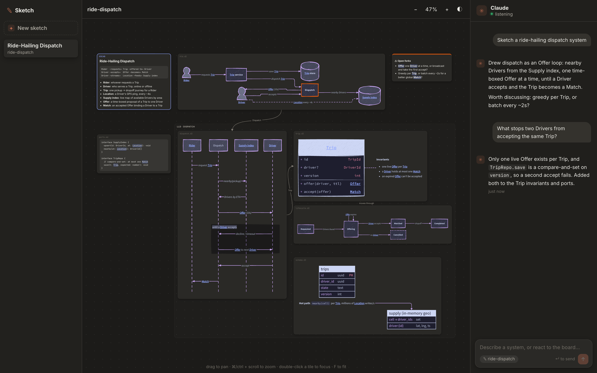

~/smarchone/sketch
Star on GitHubTalk to a whiteboard.
Review the design in 30 seconds.
tl;dr Ask Claude to whiteboard your system design. Push back, and it redraws. Made for designing, brainstorming and interviews.
- Reviewing a design doc takes an hour of careful reading.
- Even then, it's hard to feel how the system fits together.
- Interviews start at a blank whiteboard, so they test drawing instead of design thinking.
Review a design in 30 seconds
One board, only the details that matter. After each change, the tiles that changed are highlighted, so the next review is even faster.
See how the pieces fit
The business language, the components and how they talk, then the core data and contracts. You get the shape of the system before reading a word of prose.
Discuss the design, not the drawing
Hand the candidate a real design instead of a blank page. Find the flaws, argue the trade-offs, sketch the fix together. Or rehearse alone before the real thing.
How it works
A small server in your repo, and Claude Code in the same repo.
Board + chat
You review the board and type what to change in the chat beside it.
npm start
Renders your sketches live and passes your messages to Claude.
/sketch
Listens to the chat and works as the worker: it reads each message, then draws or resketches the board in your repo.

Get started in 1 minute
git clone https://github.com/smarchone/sketch && cd sketchnpm i && npm startNode 22+/sketchin Claude Code, in the same repoThen open http://127.0.0.1:3460, hit + New sketch and describe a system.
runs on your machine, nothing leaves it